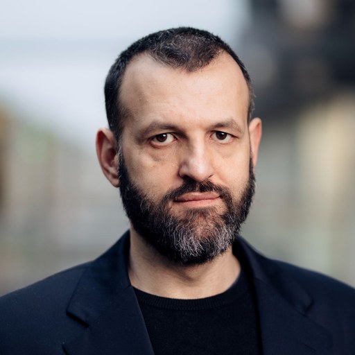
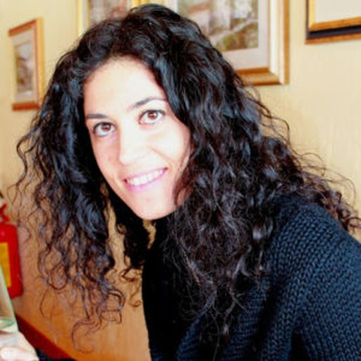

The Adaptation Tax: What Breaks When We Update Models?
Foundation models are updated again and again after pretraining. Each update is judged by what it improves. AdaTax is about what it costs.

Motivation
Foundation models are almost never used exactly as they come out of pretraining. In practice they are updated through supervised fine-tuning, reinforcement learning from human or verifier feedback, model merging, test-time adaptation, continual learning, machine unlearning, and many other procedures. These updates are usually evaluated by the improvements they bring to a target task, while much less attention is paid to what may be lost along the way.
An update that improves one capability can also reduce out-of-distribution generalization, worsen calibration, lower robustness, or weaken safety behaviors learned earlier. These side effects are common in practice, yet they are rarely measured, reported, or studied together. They have been documented in several research communities, but mostly in isolation, with different assumptions, evaluation protocols, and metrics.
We call this cost the adaptation tax: the loss in reliability, robustness, calibration, safety, or generalization that comes with an improvement on a target objective, by analogy with the alignment tax. AdaTax brings together researchers from post-training, alignment, model merging, safety, robustness, continual learning, and the application fields where updated models are deployed, to understand how models can be updated while keeping this cost low, and to make the cost visible when it is not.
Three Questions
The workshop is built around mechanism, measurement, and mitigation.
Mechanism
Which aspects of model behavior are affected by updates, and what gives rise to these effects?
- Is lost performance gone, harder to access, or overridden, and can it be recovered?
- How do narrow or seemingly benign updates spread across tasks, domains, modalities, and safety behaviors?
- Do fine-tuning, preference optimization, merging, unlearning, continual learning, and test-time adaptation fail for shared reasons?
Measurement
How can we reliably and efficiently measure adaptation costs before and after deployment?
- Protocols that report the gains and the costs of an update together, without aggregates masking severe drops.
- Update-aware evaluations that predict which capabilities an update is most likely to affect.
- Detecting costs after deployment without labels, and reliable triggers for human review or rollback.
Mitigation
How can models be updated while preserving reliability, robustness, safety, and generalization?
- Building reliability requirements into the update objective instead of checking them afterwards.
- Repairing degraded capabilities without undoing the intended gains or retraining from scratch.
- Audit, recovery, and rollback for models that are updated after deployment.
Invited Speakers
Tentative; the final line-up is confirmed after acceptance.

Razvan Pascanu

Sharon Li

Yue Zhao

Maria Brbić

Bo Li

Eleni Triantafillou

Akshay Krishnamurthy

Aditi Raghunathan
Organizers
Organizing committee.
Hao Dong

Muhammad Haris Khan
Olga Fink

Alexandros Iosifidis

Rishabh Lalla
Juho Kanniainen

Vineeth N Balasubramanian

Elisa Ricci
Topics of Interest
A submission is in scope if it explains, measures, or reduces the reliability cost of updating a foundation model.
- Mechanism: how fine-tuning, preference optimization, reinforcement learning, model merging, test-time adaptation, machine unlearning, and continual learning change parameters, representations, and behavior, including forgetting, feature distortion, calibration drift, and safety degradation.
- Measurement: metrics and protocols for comparing reliability before and after an update, efficient indicators based on weights, activations, or behavior, label-free monitoring of test-time updates, and evaluation in high-stakes domains.
- Mitigation: constrained and KL-based objectives, feature preservation, model interpolation, parameter-efficient adaptation, post-update repair, reliable merging, bounded test-time adaptation, and rollback mechanisms.
- Negative results and position papers: mitigations that do not reduce the tax as expected, findings that do not transfer across model families or modalities, post-mortems of updates that degraded deployed systems, and arguments that the tax is overstated.
A paper that proposes a new adaptation method and reports only its gains is out of scope; the same paper with a measured cost is welcome. Full details are in the Call for Papers.
Important Dates
All deadlines are Anywhere on Earth (AoE). Tentative.
| 1 Dec 2026 | Call for papers published |
| 1 Feb 2027 | Submission deadline, both tracks |
| 26 Feb 2027 | Author notification; accepted papers public on OpenReview |
| TBA | Workshop day at ICLR 2027 |
Contact
For questions.
Email: rishabh.lalla@mbzuai.ac.ae